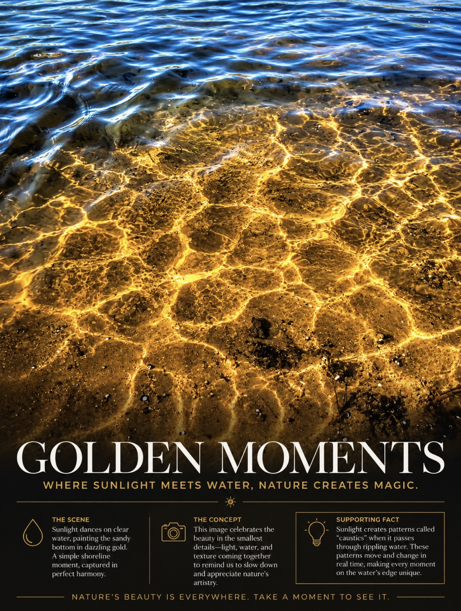
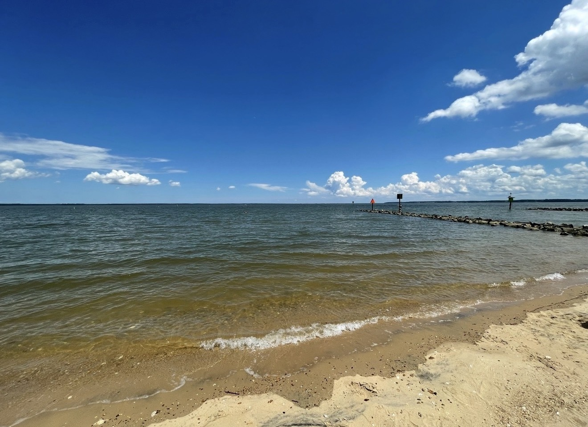

Field Gallery
Documenting waterways through light, movement, texture, and time.
Why Photography Matters
Environmental photography preserves more than beautiful scenery. It creates a visual record of shorelines, water conditions, erosion, vegetation, wildlife habitat, human activity, and environmental change.
Tideline Research Institute uses photography to encourage closer observation of the natural world. A photograph may document a temporary condition, reveal a detail that would otherwise be overlooked, or preserve a landscape for future comparison.

Waterways change from hour to hour and season to season. Rainfall, tides, sediment movement, plant growth, pollution, recreation, and development can all alter how a river looks and functions.
Repeated photography from the same locations can help document these changes over time. Images may support public education, field observations, habitat assessments, and future environmental research.
Light patterns on the water are sometimes called caustics. They form as moving water bends and focuses sunlight onto the riverbed, producing patterns that continually shift with every ripple.
Our photographic work supports a broader mission of environmental research, public education, and conservation. By documenting waterways as they exist today, we help create a record that communities and researchers can revisit tomorrow.

FIELD OBSERVATION
Every shoreline tells a story. Wind, waves, changing water levels, and natural sediment movement continually reshape the edge between land and water. Photographing these locations over time helps document seasonal changes, erosion, habitat conditions, and the overall health of aquatic ecosystems.
Scientific photography preserves moments that may otherwise be overlooked, creating a visual record that supports future environmental research and public education.